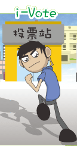

Exhibits and Games
The ICAC has produced a series of “Support Clean Elections” exhibits, game sets and computer games (all in Chinese only) to help members of the public better understand the major points of Elections (Corrupt and Illegal Conduct) Ordinance and the importance of upholding clean and fair elections. Organisations are welcome to call the Clean Election Enquiry Hotline at 2920 7878 or approach any of the ICAC Regional Offices for loan of these items.
Cartoon Exhibits
Game Sets (In Chinese only)
Tic-Tac-Toe game
to remind electors
the Dos and Don'ts
in elections
|
Building blocks game
to bring out
the message of
"Abide by the Rules,
Support
Clean Elections"
|
Marble maze game
to remind electors to
avoid bribery traps
in elections
|
|
Computer Games
The ICAC has produced two computer games (in Chinese only) which convey the clean election messages in a lively manner.

To remind electors
to report any suspected breaches
of law in elections
in order to upholding fairness,
justice and honesty. |
Through different simulated
student elections in schools,
to bring out the importance
of instilling clean and fair elections
values since early childhood. |
|
Web Accessibility Non-conformance Statement
The ICAC is committed to ensuring that its websites conform to the World Wide Web Consortium (W3C) Web Content Accessibility Guidelines (WCAG) 2.0 Level AA requirements to the maximum extent possible. However, as this webpage contains interactive e-games that require eye-hand coordination, not all level accessibility features have been incorporated. For enquiry, please email us at crd@icac.org.hk. We will try our best to provide the relevant information in a format accessible to you.